Landslide Conditioning Factors
Twelve topographic, hydrological, environmental and anthropogenic factors were used to train the Random Forest model.
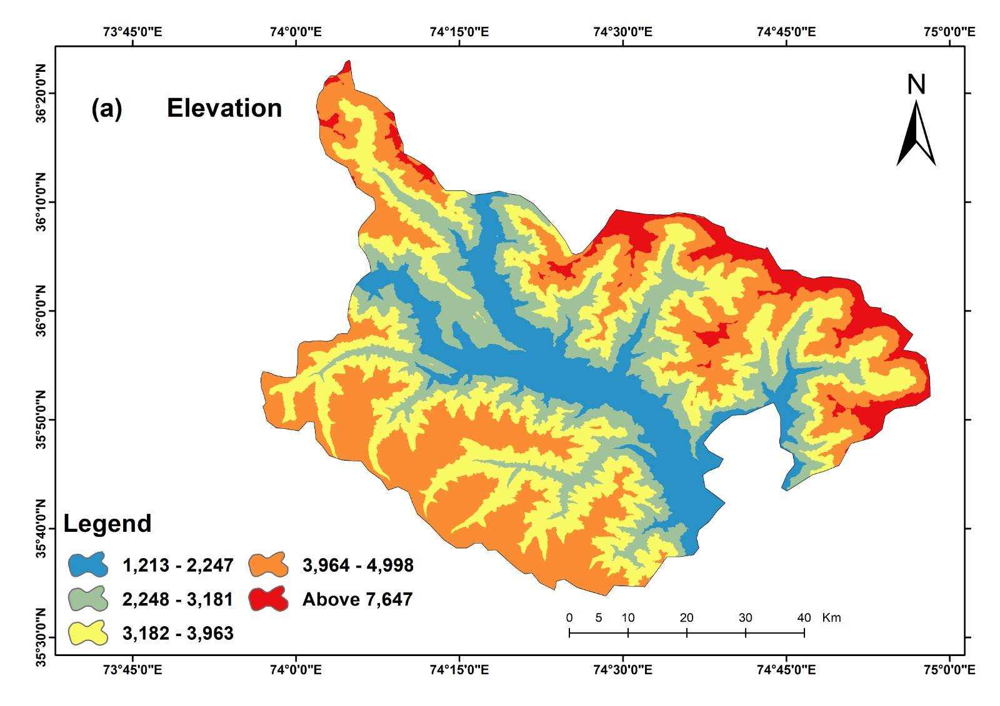
Elevation
Derived from a 30 m DEM; shapes rainfall patterns, vegetation zones and snowmelt behaviour across the district.
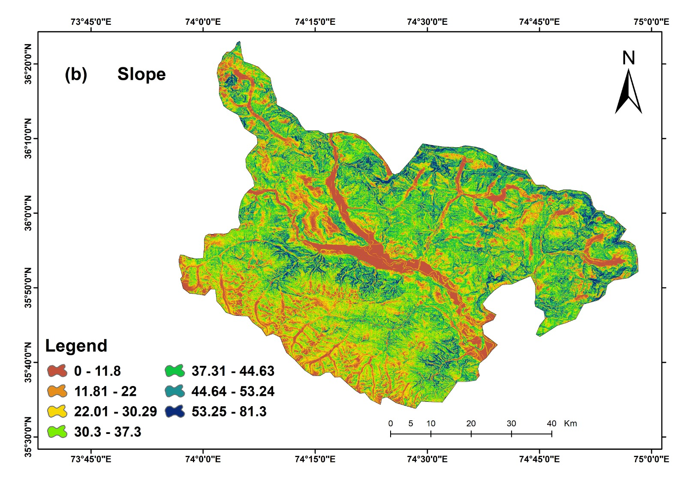
Slope
The steepest angle of terrain change — the single most influential factor, directly linked to gravitational shear stress.
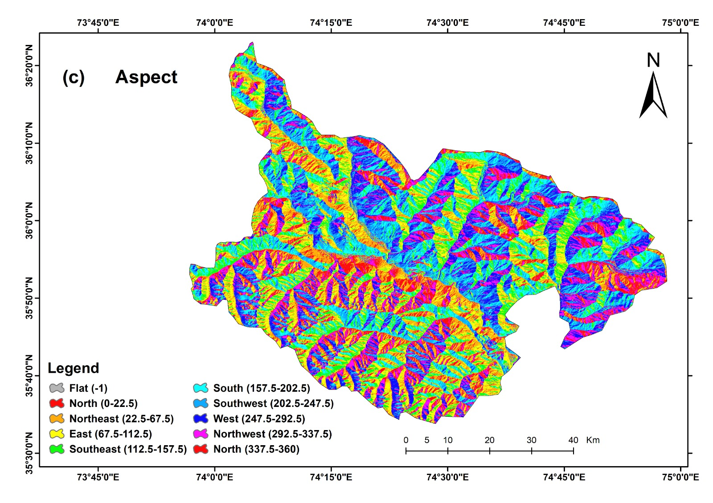
Aspect
Direction a slope faces; influences solar exposure, moisture retention and freeze–thaw weathering cycles.
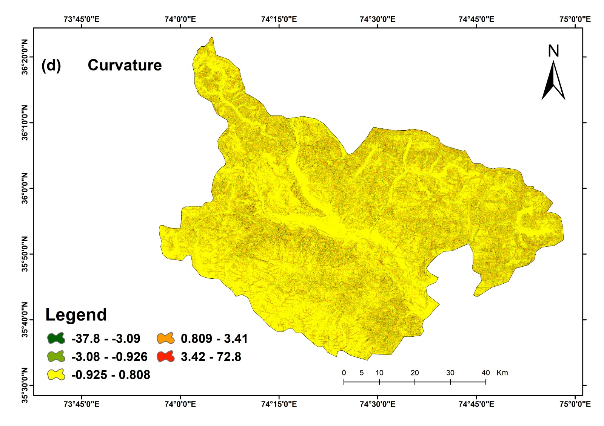
Curvature
Describes concave vs. convex terrain; concave zones trap water and loose soil, raising instability.

Profile Curvature
Curvature along the slope direction; controls runoff velocity and downslope erosion intensity.
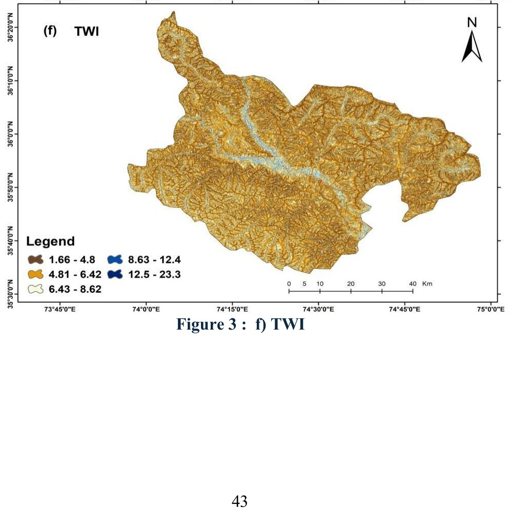
TWI
Topographic Wetness Index estimates soil moisture accumulation; higher values mean wetter, less stable ground.
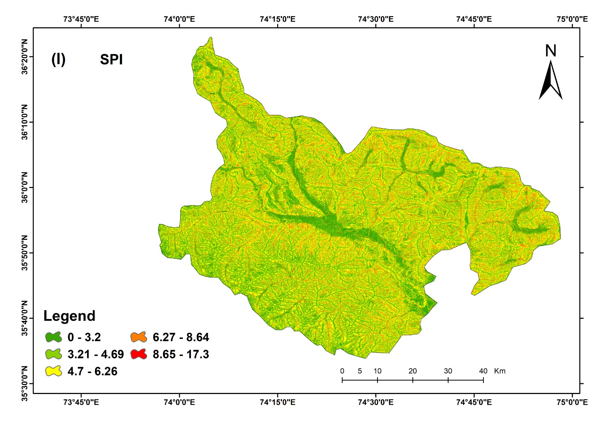
SPI
Stream Power Index measures the erosive power of surface runoff across the terrain.
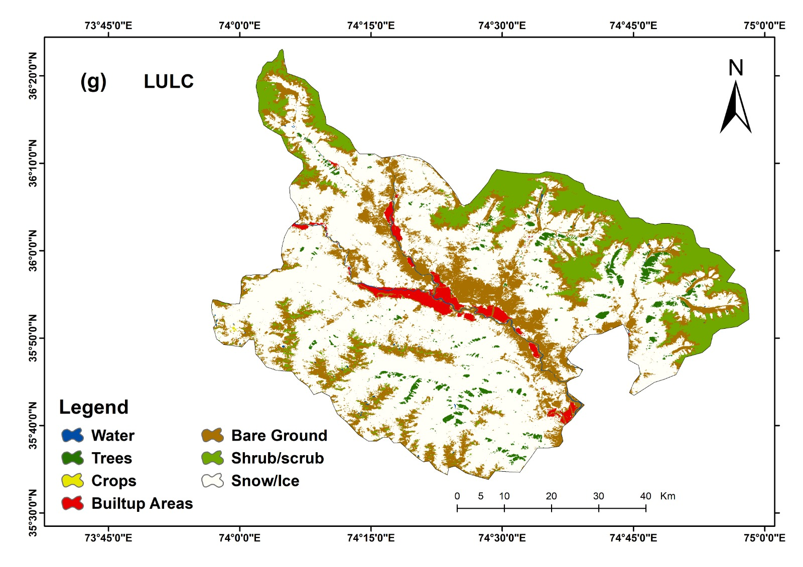
LULC
Land Use/Land Cover from ESA WorldCover; barren and sparsely vegetated land is far more landslide-prone than forest cover.
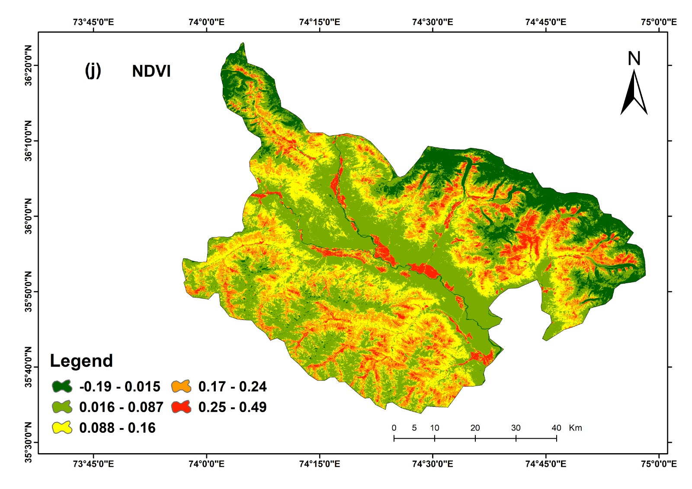
NDVI
Vegetation density and root cohesion from Sentinel-2; denser vegetation improves soil stability.
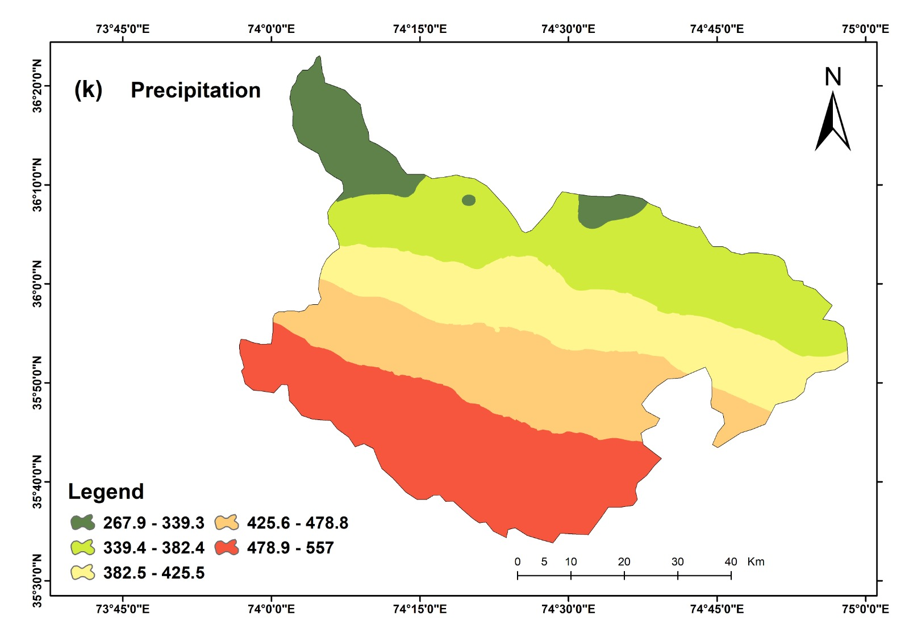
Precipitation
GPM-IMERG rainfall data; increased rainfall raises pore-water pressure, a key landslide trigger.

Distance from Rivers
Proximity to river channels; nearby slopes face continual toe erosion and bank undercutting.

Distance from Roads
Proximity to road networks; cutting, blasting and excavation activities destabilise nearby slopes.
Landslide Inventory & Model Validation
Before training, the data was checked for reliability and statistical soundness.
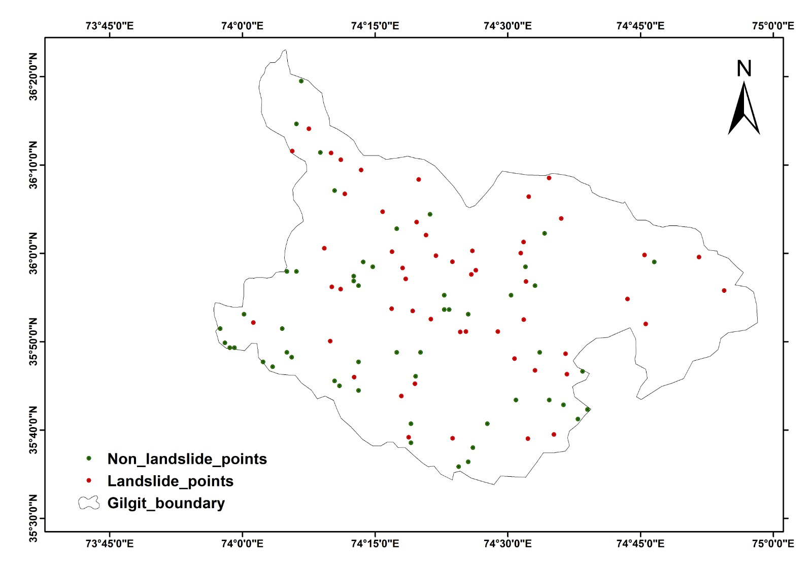
Inventory Distribution
Spatial distribution of the 52 landslide and 52 non-landslide points (2017–2024) used to train and test the model.
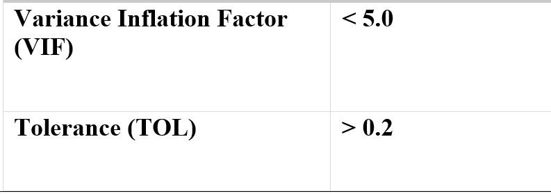
Multicollinearity Check
VIF and Tolerance values for all 12 factors — every factor fell within acceptable limits (VIF < 5, TOL > 0.2), confirming no redundant variables.
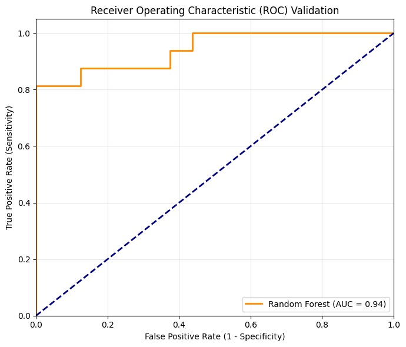
ROC-AUC Curve
The Random Forest model achieved an AUC of 0.94 — excellent discrimination between landslide and non-landslide zones.
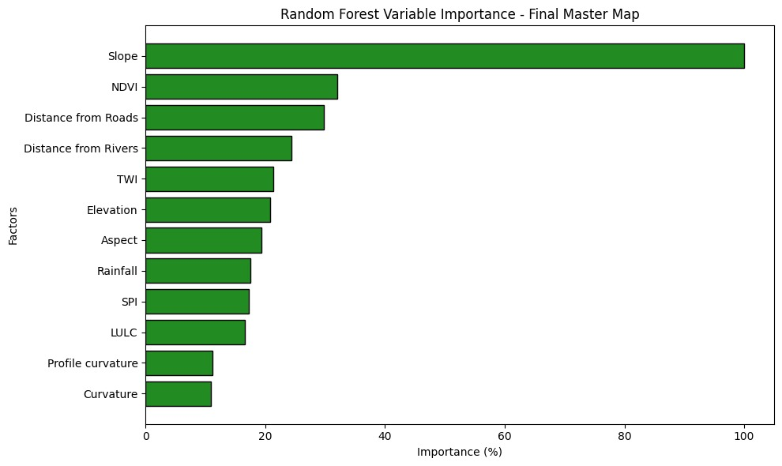
Performance Metrics
Accuracy, precision, recall and F1-score results from the 70:30 train-test split, confirming balanced, reliable classification.
Final Landslide Susceptibility Map
All twelve factors were combined through the trained Random Forest model to classify Gilgit District into five susceptibility zones.

High and Very High susceptibility zones cluster along steep valley slopes, river courses and the Karakoram Highway corridor — where SHAP identified Slope, NDVI, Distance from Roads, Distance from Rivers, TWI and Elevation as the strongest drivers.
Model Interpretability
SHAP (Explainable AI) was used to open up the Random Forest "black box" and explain what drove each prediction.
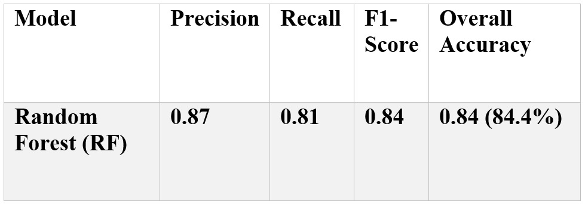
Feature Importance
Random Forest ranks Slope as the single most important factor, followed by NDVI, Distance from Roads, Distance from Rivers, TWI and Elevation.
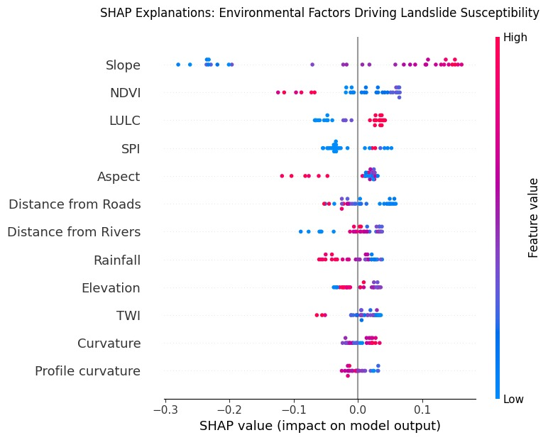
SHAP Summary Plot
Shows how each factor pushes predictions higher or lower. Steep slopes and low vegetation (NDVI) strongly increase susceptibility, while distance from roads and rivers reduces it.